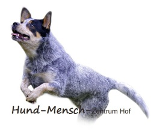
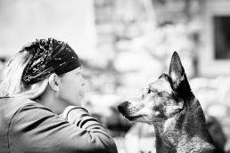

Trainingsangebote
Ein Überblick über alle Bereiche, in denen das Hund-Mensch-Zentrum Hof tätig ist.

Welpenerziehung
Während der sensiblen Phase (3. bis ca. 16. Lebenswoche) findet der größte
Teil des Gehirnwachstums statt – Welpen lernen hier besonders intensiv.
Die Intelligenz des Hundes hängt von den Lernmöglichkeiten in dieser Phase ab
und beeinflusst sein späteres Lernverhalten erheblich.
Im Hund-Mensch-Zentrum Hof wird eine optimale, vertrauensvolle Beziehung
aufgebaut, das Training dem individuellen Lerntempo des Welpen angepasst und
der Hundebesitzer in der richtigen Konditionierung geschult.

Basiserziehung
Die Basiserziehung vermittelt dem Hund grundlegende Signale und Verhaltensweisen für den Alltag. Dazu gehören Leinenführigkeit, Rückruf, Sitz, Platz und Bleib – aufgebaut auf positivem Lernen, angepasst an den individuellen Hundetyp, sein Alter und seine Konzentrationsfähigkeit.

Gruppentraining
Im Gruppentraining lernen Hund und Halter gemeinsam mit anderen Teams. Die Gruppe bietet eine realistische Ablenkungssituation, in der Signale und Verhalten gezielt gefestigt werden – ein wichtiger Schritt hin zur Alltagstauglichkeit.
Verhaltensänderung
Bei Verhaltensauffälligkeiten wie Aggression, Angst, Trennungsangst oder übermäßigem Bellen werden Ursachen analysiert und ein individueller Trainingsplan erarbeitet. Ziel ist eine nachhaltige Veränderung – für Hund und Halter gemeinsam.
VIP-Training
Intensives Einzeltraining für Hund und Halter – ohne Gruppenablenkung, mit vollem Fokus auf das jeweilige Team. Ideal für sensible Hunde, spezifische Ziele oder wenn eine besonders individuelle Betreuung gewünscht wird.
Hundetreff
Der Hundetreff findet ohne Training statt und dient dem spielerischen innerartlichen Sozialkontakt. Die Vielfalt der Signale und die körperliche Bewegung strengen die Hunde an. Der Umgang der Hunde miteinander wird beobachtet, um gegebenenfalls adäquat einschreiten zu können.